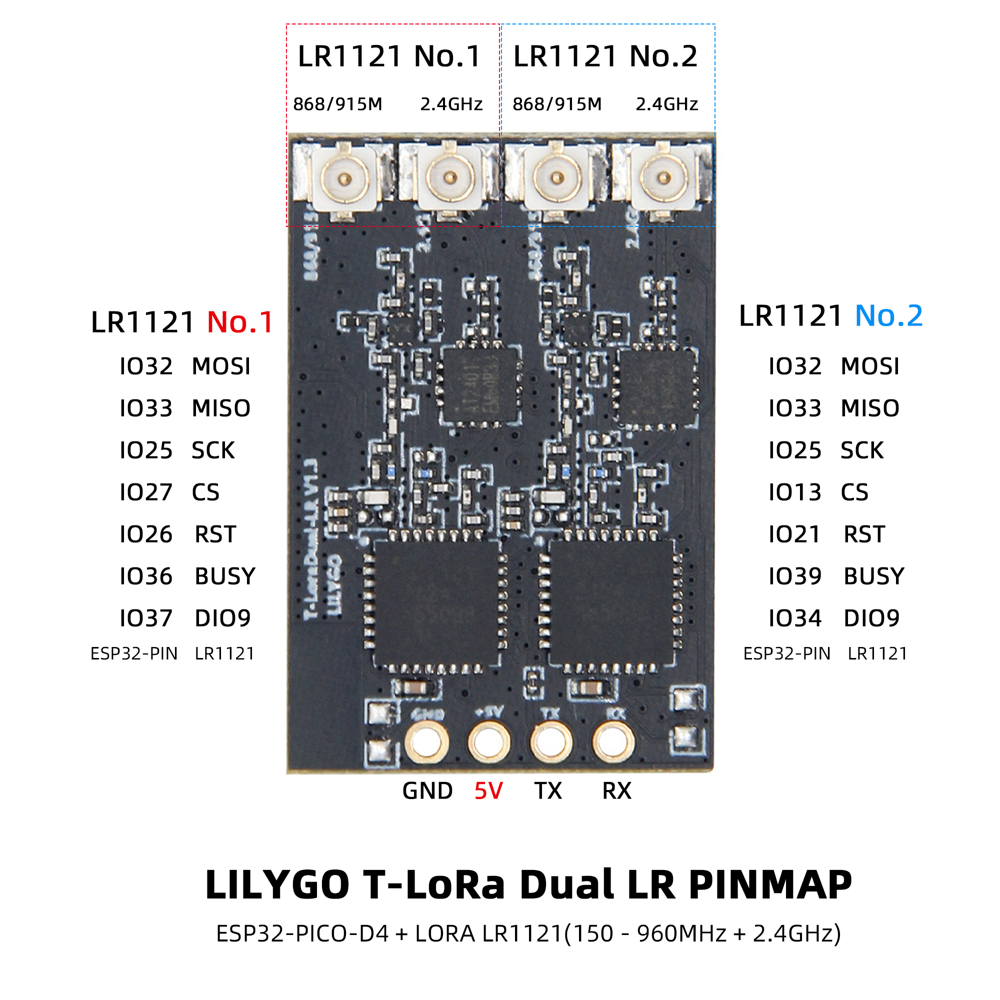

English
EnglishLILYGO T-Lora-Dual

Version History:
| Version | Update date | Update description |
|---|---|---|
| T-ELRS_V1.0 | 2025-03-15 | Initial version, supports ExpressLRS protocol |
| T-ELRS_V1.1 | 2025-06-20 | Optimized SPI timing, increased stability |
Purchase Links
| Product | MCU | Wireless Module | Band Support | Link |
|---|---|---|---|---|
| T-ELRS | ESP32-PICO-D4 | LR1121 ×2 | Sub-GHz + 1.9GHz + 2.4GHz | LILYGO Mall |
Table of Contents
- Project Overview
- Hardware Configuration
- Pin Assignment
- Function Description
- File Directory
- Flashing Guide
- Compilation Guide
- FAQ
Project Overview

T-Lora-Dual is a dual-band wireless communication module based on the ESP32-PICO-D4 microcontroller, integrating two LR1121 multi-band wireless chips, specifically designed for the ExpressLRS flight control protocol. This module supports Sub-GHz/1.9GHz/2.4GHz multi-band communication, suitable for scenarios such as remote control transmitter modules, drone data links, IoT long-distance communication, etc.
Hardware Configuration

| Module | Model | Main Features |
|---|---|---|
| Main MCU | ESP32-PICO-D4 | Dual-core processor, 240MHz, supports Wi-Fi/Bluetooth, 34 GPIOs |
| Wireless Module | LR1121 ×2 | Sub-GHz + 1.9GHz/2.4GHz dual-band, supports LoRa®/FSK modulation |
| Status Indicator | LED | Controlled by GPIO5, used for working status indication |
| RF Switch | AT2401 | Controls antenna switching, supports dual-channel transmission/reception |
Pin Assignment

LR1121-1 Module
| Signal | ESP32 Pin | Description |
|---|---|---|
| MISO | 33 | SPI data input |
| MOSI | 32 | SPI data output |
| SCK | 25 | SPI clock |
| CS | 27 | Chip select |
| DIO9 | 37 | Interrupt signal |
| RST | 26 | Module reset |
| BUSY | 36 | Module status output |
LR1121-2 Module
| Signal | ESP32 Pin | Description |
|---|---|---|
| MISO | 33 | SPI data input (shared) |
| MOSI | 32 | SPI data output (shared) |
| SCK | 25 | SPI clock (shared) |
| CS | 13 | Chip select |
| DIO9 | 34 | Interrupt signal |
| RST | 21 | Module reset |
| BUSY | 39 | Module status output |
AT2401 RF Switch
| Signal | ESP32 Pin | Function |
|---|---|---|
| TX1 | 14 | Transmission channel 1 control |
| TX2 | 15 | Transmission channel 2 control |
| RX1 | 10 | Reception channel 1 control |
| RX2 | 9 | Reception channel 2 control |
Status Indicator
| Signal | ESP32 Pin | Function |
|---|---|---|
| LED | 5 | Status indicator LED |
Function Description
- Dual Module Architecture: Two LR1121 modules share the SPI bus (SCK/MOSI/MISO), with independent CS signals enabling dual-band concurrent communication.
- Hardware Isolation: Each module has independent RESET, BUSY, DIO9 pins, ensuring communication processes do not interfere with each other.
- Status Monitoring: DIO9 is used for module interrupt reception, BUSY provides real-time module working status feedback.
- RF Switching: AT2401 controls antenna switching, supports dual-channel transmission/reception mode switching.
File Directory
├── ExpressLRS/ # ExpressLRS related code directory
│ └── src/ # Source code directory
│ ├── user_defines # ExpressLRS configuration
│ ├── hardware/ # Hardware directory
│ │ ├── RX/ # ExpressLRS receiver hardware IO corresponding files (T-ELRS LR1121 True Diversity.json)
│ │ ├── TX/ # ExpressLRS transmitter hardware IO corresponding files
│ │ └── targets.json # ExpressLRS hardware IO compilation target selection file (compile selection 1.BAYCKRC 900/2400 Dual Band Gemini RX)
│ └── lib/ # ExpressLRS dependency libraries
├── T-ELRS/ # T-ELRS related code directory
│ ├── src/ # Source code directory
│ ├── examples/ # Example codes
│ ├── firmware/ # Firmware directory
│ └── hardware/ # Hardware schematic
└── README.md # English project description file
└── README_CN.md # Chinese project description file
For deeper understanding, please visit the ExpressLRS official website
Flashing Guide
- Ensure ESP32 enters download mode before flashing (hold down the BOOT button, then press and release the RESET button)
- Use ESP Flash Download Tool (Windows)
- Check if the serial port driver is properly installed
- If flashing fails, try lowering the baud rate or changing the USB cable
- Press the RESET button to restart the device after flashing is complete
Compilation Guide
ExpressLRS Compilation (PlatformIO Only)
- Open the src subdirectory under the ExpressLRS directory with VSCode
- First select the device model


3. Then click compile and upload. The first compilation requires downloading files, which may be a bit slow

T-ELRS Compilation
PlatformIO
- Open the T-ELRS directory with VSCode, then open the platformio file and uncomment the example to be compiled

- Then click compile and upload
Arduino IDE
- Move the lib directory under the T-ELRS directory to the Arduino project dependency library directory

- Open the example in the examples directory with Arduino IDE
- Select the chip model and choose the default configuration


- Click compile and upload